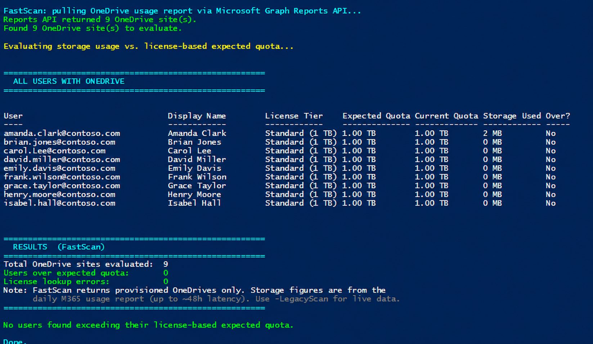

Identify OneDrive Users Over License-Based Storage Quota
Summary
Identifies OneDrive for Business users who are over their expected storage quota based on their assigned license tier, with special handling for EDU A1 enforcement (100 GB entitlement). The script uses Microsoft Graph exclusively — no SharePoint Online Management Shell, no PnP, no third-party modules.
OneDrive sites are provisioned with a default storage quota based on tenant settings, but the expected quota varies by license tier. EDU A1 users, for example, are entitled to 100 GB — but if they were provisioned before A1 enforcement, they may have a 1 TB or 5 TB allocation and be storing far more than 100 GB today. This script answers: Which OneDrive sites are storing more data than the owner's license tier entitles them to?
The script is strictly read-only. It never modifies a quota, license, or file. It only reports.
Works on Windows PowerShell 5.1+ and PowerShell 7+, on commercial, GCC Moderate, GCC High, DoD, and 21Vianet (China) tenants.

Implementation
Quota tiers it evaluates
The expected quota is derived from the highest-tier OneDrive service plan in the user's licenses (SKUs stack — the script picks the most generous):
| Tier | Expected Quota | Typical SKUs |
|---|---|---|
| Enterprise | 5 TB | E3, E5, A3, A5, Plan 2 |
| Standard | 1 TB | Plan 1, Multi-Geo |
| Lite / A1 (EDU) | 100 GB | OneDrive Lite, Office 365 A1 |
| BasicP2 | 10 GB | Basic 2 |
| Viral / Basic | 5 GB | Office for the web, Basic |
| Deskless | 2 GB | F1, F3, Kiosk |
Unlicensed users with a OneDrive (e.g. retained offboarded accounts) are flagged as over quota whenever StorageUsed > 0.
Scan modes
| Mode | How invoked | Speed | Data freshness | Notes |
|---|---|---|---|---|
| FastScan | default | ~minutes on 100k-user tenants | Daily snapshot (~24-48h latency) | Uses Reports API. Returns provisioned OneDrives only. Won't work if tenant report anonymization is on. |
| LegacyScan | -LegacyScan |
~hours on 100k-user tenants | Real-time | Per-user enumeration. Works regardless of anonymization. |
| TargetedUser | -UserPrincipalName |
seconds | Real-time | Looks up only the specified UPN(s). Bypasses both modes above. |
Prerequisites
| Requirement | Notes |
|---|---|
| PowerShell 5.1+ or PowerShell 7+ | Script enforces #Requires -Version 5.1. |
Microsoft.Graph.Authentication ≥ 2.0.0 |
Auto-installable with -InstallPrerequisites. |
Microsoft.Graph.Users ≥ 2.0.0 |
Same. |
| Graph delegated scopes | User.Read.All, Directory.Read.All, Reports.Read.All, Sites.Read.All. May need Global Admin consent on first run. |
| M365 role | Global Reader is sufficient and recommended (least privilege). |
CSV output
When -ExportPath is set, the CSV contains every evaluated site, sorted so over-quota rows appear first.
| Column | Description |
|---|---|
Owner, DisplayName, SiteUrl |
Identity and site location |
LicenseTier |
e.g. "Enterprise (5 TB)", "A1 (100 GB)", "Unlicensed" |
ExpectedQuota / CurrentQuota / StorageUsed |
Human-readable storage figures |
OverBy |
Amount over (blank if under) |
OverQuota |
True / False — filter on this in Excel |
StorageUsedMB, ExpectedQuotaMB, CurrentQuotaMB, OverByMB |
Numeric versions for pivots |
AssignedSKUs |
Comma-separated SKU part numbers |
<#
.SYNOPSIS
Identifies OneDrive users who may be over their expected storage quota based on
their license, with special handling for EDU A1 enforcement.
.DESCRIPTION
Uses Microsoft Graph exclusively to:
1. Discover OneDrive sites in the tenant (FastScan or LegacyScan; see below).
2. Retrieve each owner's license SKUs via Microsoft Graph.
3. Calculate the expected quota based on the highest license tier:
- Enterprise (E3/E5/A3/A5): 5 TB
- EDU A1 (highest SKU is A1): 100 GB
- Standard (Plan 1/Plan 2 with CloudStorage): 1 TB
- Lite (OneDrive Lite): 100 GB
- BasicP2: 10 GB
- Viral: 5 GB
- Basic: 5 GB
- Deskless (F1/F3): 2 GB
4. Flags users where StorageUsed > expected quota via an OverQuota column.
5. Outputs a formatted console report and (optionally) a single CSV containing
ALL sites with an OverQuota True/False column for filtering in Excel.
SCAN MODES
==========
This script supports two ways to discover OneDrive sites in the tenant.
FastScan (DEFAULT — recommended for most tenants)
--------------------------------------------------
Uses the Microsoft Graph Reports API (getOneDriveUsageAccountDetail) to
pull every PROVISIONED OneDrive in the tenant in a single bulk download.
Then queries license details only for the owners of those sites.
Pros: Dramatically faster on large tenants. A 100,000-user tenant
takes a few minutes instead of ~2 hours, because we don't
iterate every user in the directory — we start from the list
of OneDrives that actually exist.
Cons: Report data is refreshed daily by Microsoft 365 (up to ~48h
latency on storage figures, which is fine for "who is over
quota" — quota usage doesn't shift TB-level numbers minute
to minute). Will NOT work if your tenant has "Display
concealed user names in reports" enabled in SharePoint Admin Center — the script detects
this and exits with instructions for how to fix it.
LegacyScan (opt-in via -LegacyScan)
------------------------------------
Enumerates every user in the directory, checks each for a provisioned
OneDrive, and pulls live drive quota per user.
Pros: Real-time storage numbers (not from a daily snapshot). Works
regardless of report anonymization settings. Reports licensed
users WITHOUT a provisioned OneDrive.
Cons: Very slow on large tenants. A 100,000-user tenant takes
~2 hours; FastScan on the same tenant takes under a minute.
-UserPrincipalName bypasses BOTH modes and queries the specified users
directly. It is not affected by the scan-mode choice.
.PARAMETER ExportPath
Optional. CSV export path. When set, the CSV contains every evaluated site
(not just over-quota ones), sorted so that over-quota sites appear first.
The OverQuota column lets admins filter to over-quota users in Excel.
Use a full path (e.g. "C:\Users\you\Downloads\report.csv") to avoid path
resolution surprises when running PowerShell as Administrator.
.PARAMETER TenantId
Optional. Target tenant ID (GUID) or domain. Required for multi-tenant admins
(MSPs, CSPs, delegated admins, or guests) who need to target a specific customer
tenant rather than their home tenant.
.PARAMETER Environment
Optional. The Microsoft Graph national cloud to connect to. Defaults to 'Global'
(commercial / GCC Moderate). Use 'USGov' for GCC High, 'USGovDoD' for DoD,
or 'China' for 21Vianet.
.PARAMETER UserPrincipalName
Optional. One or more user principal names (UPNs) to evaluate. When specified,
only these users are checked — the full tenant is NOT enumerated. Useful for
spot-checking a specific user or a small list. Bypasses both FastScan and
LegacyScan.
.PARAMETER LegacyScan
Optional. Use the original per-user enumeration method instead of the default
FastScan. Slower but returns real-time storage numbers and works with
anonymized tenant reports. See SCAN MODES in the description.
.PARAMETER InstallPrerequisites
Optional. When set, the script will install any missing required modules to the
current user scope. Without this switch, missing modules produce a clear error
with the command to run manually. Recommended on hardened/corporate machines
where silent installs are not desired.
.EXAMPLE
.\Get-ODBOverQuotaUsers.ps1
# FastScan (default) — bulk Reports API discovery
.EXAMPLE
.\Get-ODBOverQuotaUsers.ps1 -ExportPath "C:\Reports\OneDriveQuotaReport.csv"
.EXAMPLE
.\Get-ODBOverQuotaUsers.ps1 -LegacyScan
# Per-user enumeration — slower but live storage figures
.EXAMPLE
.\Get-ODBOverQuotaUsers.ps1 -TenantId "contoso.onmicrosoft.com" -Environment USGov
.EXAMPLE
.\Get-ODBOverQuotaUsers.ps1 -UserPrincipalName alice@contoso.com
.EXAMPLE
.\Get-ODBOverQuotaUsers.ps1 -UserPrincipalName alice@contoso.com,bob@contoso.com -ExportPath .\spotcheck.csv
.EXAMPLE
.\Get-ODBOverQuotaUsers.ps1 -InstallPrerequisites
#>
[CmdletBinding()]
param(
[string]$ExportPath,
[string]$TenantId,
[ValidateSet('Global','USGov','USGovDoD','China')]
[string]$Environment = 'Global',
[string[]]$UserPrincipalName,
[switch]$LegacyScan,
[switch]$InstallPrerequisites
)
#region --- Constants matching OdbQuotaManager.cs ---
# From OdbQuotaManager:
# Enterprise = "Personal Site Enterprise" -> 5 TB
# A1 = A1QuotaInBytes = 107,374,182,400 -> 100 GB
# Standard = "StandardQuotaTemplate" -> 1 TB (default for CloudStorage + MySite)
# Lite = "Personal Site Lite" -> 100 GB
# BasicP2 = "Personal Site Basic P2" -> 10 GB
# Viral = "Personal Site Viral" -> 5 GB
# Basic = "Personal Site Basic" -> 5 GB
# Deskless = "Personal Site Deskless" -> 2 GB
$QuotaLimits = @{
Enterprise = 5TB / 1MB # 5,242,880 MB
A1Edu = 100GB / 1MB # 102,400 MB
Standard = 1TB / 1MB # 1,048,576 MB
Lite = 100GB / 1MB # 102,400 MB
BasicP2 = 10GB / 1MB # 10,240 MB
Viral = 5GB / 1MB # 5,120 MB
Basic = 5GB / 1MB # 5,120 MB
Deskless = 2GB / 1MB # 2,048 MB
Unknown = 5TB / 1MB # 5,242,880 MB (safe default)
}
# Service Plan ID → OD4B Quota Tier mapping
# Source: ODSP FairUse Dashboard (sku-mapping) — all non-archived service plans with storage limits
# Tier priority: Enterprise (5TB) > Standard (1TB) > Lite (100GB) > BasicP2 (10GB) > Basic (5GB) > Deskless (2GB)
$ServicePlanOD4BMap = @{
# --- Enterprise (5 TB) ---
"5dbe027f-2339-4123-9542-606e4d348a72" = "Enterprise" # SharePoint (Plan 2)
"63038b2c-28d0-45f6-bc36-33062963b498" = "Enterprise" # SharePoint (Plan 2) for Education
"6b5b6a67-fc72-4a1f-a2b5-beecf05de761" = "Enterprise" # SharePoint (Plan 1) [5TB variant]
"afcafa6a-d966-4462-918c-ec0b4e0fe642" = "Enterprise" # OneDrive for Business (Plan 2)
"e8474baf-0959-45d7-b041-91407b2c358d" = "Enterprise" # ONEDRIVE FOR BUSINESS (PLAN 2G)
"153f85dd-d912-4762-af6c-d6e0fb4f6692" = "Enterprise" # SharePoint Plan 2G
"6fc31d91-cb7f-45ad-885a-bb357a2c98b5" = "Enterprise" # SharePoint Online (Plan 2) LRG
"3f804828-b016-40cd-be71-fb1368e8dcbb" = "Enterprise" # SharePoint Online (Plan 2) LRG for Education
"a361d6e2-509e-4e25-a8ad-950060064ef4" = "Enterprise" # SharePoint for Developer (directLimit=5TB)
"6c1e1afb-e231-4bff-abf2-5c93e271f694" = "Enterprise" # SharePoint for Developer (directLimit=5TB)
# --- Standard (1 TB) ---
"c7699d2e-19aa-44de-8edf-1736da088ca1" = "Standard" # SharePoint (Plan 1)
"a1f3d0a8-84c0-4ae0-bae4-685917b8ab48" = "Standard" # SharePoint (P1)
"0a4983bb-d3e5-4a09-95d8-b2d0127b3df5" = "Standard" # SharePoint (Plan 1) for Education
"5dba4eee-6994-480c-88d5-44c9c1de647e" = "Standard" # SHAREPOINT (PLAN 1) FOR EDUCATION
"f9c43823-deb4-46a8-aa65-8b551f0c4f8a" = "Standard" # SharePoint Plan 1G
"13696edf-5a08-49f6-8134-03083ed8ba30" = "Standard" # OneDrive for Business (Plan 1)
"f0488f6e-4b1b-450c-86ec-bcef5fa9e372" = "Standard" # ONEDRIVE FOR BUSINESS (PLAN 1)
"1fadb9de-98e3-4026-bd66-3afa483e8565" = "Standard" # SharePoint Online Multi-Geo
# --- Lite (100 GB) ---
"595b0f5e-1426-424a-9072-78737b4d9c80" = "Lite" # ONEDRIVELITE
"ffa8818c-1a05-44e6-a2c5-0b2a1e2f572d" = "Lite" # SharePoint Plan 2A
# --- BasicP2 (10 GB) ---
"4495894f-534f-41ca-9d3b-0ebf1220a423" = "BasicP2" # OneDrive for Business (Basic 2)
# --- Viral (5 GB) ---
"b4ac11a0-32ff-4e78-982d-e039fa803dec" = "Viral" # Office for the web with OneDrive for business
# --- Basic (5 GB) ---
"da792a53-cbc0-4184-a10d-e544dd34b3c1" = "Basic" # OneDrive for Business (Basic)
"98709c2e-96b5-4244-95f5-a0ebe139fb8a" = "Basic" # OneDrive for Business (Basic)
"39be5b40-baea-4768-ac2f-c814be691b98" = "Basic" # ONEDRIVE FOR BUSINESS BASIC
"d2310dc8-4e1a-4c32-ba74-d18a378b0581" = "Basic" # OneDrive for Business Basic
"e51b74f5-07d8-46c2-9fad-dfc75a782427" = "Basic" # OneDrive for Business Basic
"93839697-a963-4cf8-9cac-fb71c4c07d7b" = "Basic" # OneDrive for Business Basic
"bf56428d-a479-4f5b-82cc-f788d6b5d449" = "Basic" # OneDrive for Business (Basic 3)
# --- Deskless (2 GB) ---
"902b47e5-dcb2-4fdc-858b-c63a90a2bdb9" = "Deskless" # SharePoint Kiosk
"7c156078-6e6c-46c7-adb0-83d1a671b591" = "Deskless" # SharePoint Kiosk
"4f88d6a3-c0be-4854-89e0-302bacd5b1c7" = "Deskless" # SHAREPOINT KIOSK
"b1aeb897-3a19-46e2-8c27-a609413cf193" = "Deskless" # SharePoint KioskG
# --- Archived / Retired — Enterprise (5 TB) ---
"32c173cd-bbde-4b64-a45c-6234f756e1b2" = "Enterprise" # Archived - SHAREPOINT_S_ENTERPRISE_B_PILOT
"ae978e94-23ef-4c3b-8cd0-ba576f9c455c" = "Enterprise" # Archived - SHAREPOINT_S_ENTERPRISE_PILOT
"639e4bc2-37bc-4ec9-8e4a-280d9dbf8649" = "Enterprise" # Archived - SHAREPOINTSTANDARD_EDU_PILOT
"828c2b6a-bf85-4103-bbc7-d22d36d7dec5" = "Enterprise" # Archived - SHAREPOINT_S_DEVELOPER_B_PILOT (directLimit=5TB)
"6bfc447a-7497-43af-9561-3ee81260e2b1" = "Enterprise" # Archived - SHAREPOINT_S_DEVELOPER_PILOT (directLimit=5TB)
# --- Archived / Retired — Standard (1 TB) ---
"aeaf2f0f-7d48-4dd4-a498-dde2f12cc9f4" = "Standard" # Archived - SHAREPOINT_L_PROFESSIONAL_B_PILOT
"1876e0a3-16c9-4cd1-a75f-d40797badd78" = "Standard" # Archived - SHAREPOINT_L_PROFESSIONAL_PILOT
}
# Tier priority for comparing service plans (higher = more storage)
$TierPriority = @{
Enterprise = 7
Standard = 6
Lite = 5
BasicP2 = 4
Viral = 3
Basic = 2
Deskless = 1
}
# Graph base URL — defined once and referenced as a simple variable everywhere a
# URL is constructed. This avoids the $(...) subexpression-in-string pattern,
# which can be fragile if the file is copy-pasted through editors that convert
# straight quotes to curly quotes.
$GraphBaseUrl = 'https://graph.microsoft.com/v1.0'
#endregion
#region --- Helper Functions ---
function Invoke-GraphRequestWithRetry {
<#
.SYNOPSIS
Wraps Invoke-MgGraphRequest with throttling/retry support.
.DESCRIPTION
Honors the Retry-After header on HTTP 429 (throttled) and 503/504
(transient service errors). Falls back to capped exponential backoff
when no Retry-After header is provided. This is required for tenants
of any meaningful size because the /users/{id}/drive and
/users/{id}/licenseDetails endpoints throttle aggressively, and
unhandled 429s would otherwise cause silent gaps in the report.
#>
param(
[Parameter(Mandatory)]
[string]$Uri,
[string]$Method = 'GET',
[int]$MaxRetries = 5
)
$attempt = 0
while ($true) {
try {
return Invoke-MgGraphRequest -Method $Method -Uri $Uri -ErrorAction Stop
}
catch {
$status = $null
if ($_.Exception.PSObject.Properties.Name -contains 'Response' -and $_.Exception.Response) {
try { $status = [int]$_.Exception.Response.StatusCode } catch {}
}
$attempt++
if ($status -in 429, 503, 504 -and $attempt -le $MaxRetries) {
# Prefer Retry-After header when present
$retryAfter = $null
try {
$headers = $_.Exception.Response.Headers
if ($headers -and $headers['Retry-After']) {
$retryAfter = [int]$headers['Retry-After']
}
} catch {}
if (-not $retryAfter -or $retryAfter -le 0) {
# Capped exponential backoff: 2, 4, 8, 16, 32 seconds (max 60)
$retryAfter = [int][Math]::Min([Math]::Pow(2, $attempt), 60)
}
Write-Verbose "Graph returned HTTP $status on $Uri. Retry $attempt/$MaxRetries in ${retryAfter}s."
Start-Sleep -Seconds $retryAfter
continue
}
throw
}
}
}
function Get-OneDriveUsageReportCsv {
<#
.SYNOPSIS
Downloads the OneDrive usage report (CSV) from the Microsoft Graph Reports API.
.DESCRIPTION
Returns the report as a temp file path. The caller is responsible for
Import-Csv'ing it and deleting the temp file when finished.
Includes retry-on-throttle semantics matching Invoke-GraphRequestWithRetry.
#>
param(
[string]$Period = 'D7',
[int]$MaxRetries = 5
)
$uri = "$GraphBaseUrl/reports/getOneDriveUsageAccountDetail(period='$Period')"
$tempCsv = [System.IO.Path]::Combine([System.IO.Path]::GetTempPath(),
('odb-usage-' + [Guid]::NewGuid().ToString() + '.csv'))
$attempt = 0
while ($true) {
try {
# -OutputFilePath writes the raw response body straight to disk,
# which avoids any JSON/CSV content-type parsing surprises.
Invoke-MgGraphRequest -Method GET -Uri $uri -OutputFilePath $tempCsv -ErrorAction Stop
return $tempCsv
}
catch {
$status = $null
if ($_.Exception.PSObject.Properties.Name -contains 'Response' -and $_.Exception.Response) {
try { $status = [int]$_.Exception.Response.StatusCode } catch {}
}
$attempt++
if ($status -in 429, 503, 504 -and $attempt -le $MaxRetries) {
$retryAfter = $null
try {
$headers = $_.Exception.Response.Headers
if ($headers -and $headers['Retry-After']) {
$retryAfter = [int]$headers['Retry-After']
}
} catch {}
if (-not $retryAfter -or $retryAfter -le 0) {
$retryAfter = [int][Math]::Min([Math]::Pow(2, $attempt), 60)
}
Write-Verbose "Reports API HTTP $status. Retry $attempt/$MaxRetries in ${retryAfter}s."
Start-Sleep -Seconds $retryAfter
continue
}
if (Test-Path $tempCsv) { Remove-Item $tempCsv -Force -ErrorAction SilentlyContinue }
throw
}
}
}
function Get-ExpectedQuotaTier {
<#
.SYNOPSIS
Determines the expected OneDrive quota tier for a user based on their license SKUs.
#>
param(
[Parameter(Mandatory)]
[object[]]$LicenseDetails
)
# Check service plans by ID using the comprehensive OD4B mapping from the FairUse Dashboard.
# Find the highest-tier OD4B service plan the user has provisioned.
$bestTier = $null
$bestPriority = 0
foreach ($license in $LicenseDetails) {
if ($license.servicePlans) {
foreach ($plan in $license.servicePlans) {
if ($plan.provisioningStatus -eq "Success" -or $plan.provisioningStatus -eq "PendingInput") {
$planId = $plan.servicePlanId.ToLower()
if ($ServicePlanOD4BMap.ContainsKey($planId)) {
$tier = $ServicePlanOD4BMap[$planId]
$priority = $TierPriority[$tier]
if ($priority -gt $bestPriority) {
$bestTier = $tier
$bestPriority = $priority
}
}
}
}
}
}
if ($bestTier) {
$desc = switch ($bestTier) {
"Enterprise" { "Enterprise (5 TB)" }
"Standard" { "Standard (1 TB)" }
"Lite" { "Lite (100 GB)" }
"BasicP2" { "BasicP2 (10 GB)" }
"Viral" { "Viral (5 GB)" }
"Basic" { "Basic (5 GB)" }
"Deskless" { "Deskless (2 GB)" }
}
return @{ Tier = $bestTier; LimitMB = $QuotaLimits[$bestTier]; Description = $desc }
}
# Fall back to Unknown (5 TB default)
return @{ Tier = "Unknown"; LimitMB = $QuotaLimits.Unknown; Description = "Unknown (default 5 TB)" }
}
function Format-StorageSize {
param([long]$MB)
if ($MB -ge 1048576) { return "{0:N2} TB" -f ($MB / 1048576) }
if ($MB -ge 1024) { return "{0:N2} GB" -f ($MB / 1024) }
return "$MB MB"
}
#endregion
#region --- Prerequisites (detect + optional install) ---
# We detect required modules and either:
# (a) install them automatically when -InstallPrerequisites is set, OR
# (b) print a clear remediation banner and exit.
$requiredModules = @(
@{ Name = 'Microsoft.Graph.Authentication'; MinVersion = '2.0.0' }
@{ Name = 'Microsoft.Graph.Users'; MinVersion = '2.0.0' }
)
$missing = @()
foreach ($mod in $requiredModules) {
$installed = Get-Module -ListAvailable -Name $mod.Name |
Where-Object { $_.Version -ge [version]$mod.MinVersion } |
Select-Object -First 1
if (-not $installed) { $missing += $mod }
}
if ($missing.Count -gt 0) {
if ($InstallPrerequisites) {
Write-Host "Bootstrapping prerequisites..." -ForegroundColor Yellow
$gallery = Get-PSRepository -Name PSGallery -ErrorAction SilentlyContinue
if ($gallery -and $gallery.InstallationPolicy -ne 'Trusted') {
Set-PSRepository -Name PSGallery -InstallationPolicy Trusted
}
if (-not (Get-PackageProvider -Name NuGet -ErrorAction SilentlyContinue)) {
Install-PackageProvider -Name NuGet -MinimumVersion 2.8.5.201 -Force -Scope CurrentUser | Out-Null
}
foreach ($mod in $missing) {
Write-Host "Installing $($mod.Name) (>= $($mod.MinVersion))..." -ForegroundColor Yellow
Install-Module -Name $mod.Name -MinimumVersion $mod.MinVersion -Scope CurrentUser -Force -AllowClobber -ErrorAction Stop
}
}
else {
$names = ($missing | ForEach-Object { $_.Name }) -join ', '
Write-Host ""
Write-Host "======================================================" -ForegroundColor Red
Write-Host " MISSING PREREQUISITES" -ForegroundColor Red
Write-Host "======================================================" -ForegroundColor Red
Write-Host ""
Write-Host "The following required PowerShell modules are missing or below the minimum version:" -ForegroundColor Yellow
Write-Host ""
foreach ($mod in $missing) {
Write-Host " - $($mod.Name) (>= $($mod.MinVersion))" -ForegroundColor Yellow
}
Write-Host ""
Write-Host "FIX (recommended) - re-run this script with the install switch:" -ForegroundColor Green
Write-Host " .\Get-ODBOverQuotaUsers.ps1 -InstallPrerequisites" -ForegroundColor White
Write-Host ""
Write-Host "OR install the modules manually for the current user:" -ForegroundColor Green
Write-Host " Install-Module $names -Scope CurrentUser" -ForegroundColor White
Write-Host ""
exit 1
}
}
foreach ($mod in $requiredModules) {
if (-not (Get-Module -Name $mod.Name)) {
Import-Module $mod.Name -ErrorAction Stop
}
}
#endregion
#region --- Connect ---
Write-Host "`n======================================================" -ForegroundColor Cyan
Write-Host " OneDrive Over-Quota Detection (License-Based)" -ForegroundColor Cyan
Write-Host "======================================================`n" -ForegroundColor Cyan
# Decide scan mode for the run (informational only — actual branching happens below)
$scanMode = if ($UserPrincipalName) { 'TargetedUser' }
elseif ($LegacyScan) { 'LegacyScan' }
else { 'FastScan' }
Write-Host "Scan mode: $scanMode" -ForegroundColor Cyan
Write-Host "Connecting to Microsoft Graph ($Environment)..." -ForegroundColor Green
$graphParams = @{
Scopes = @("User.Read.All", "Directory.Read.All", "Reports.Read.All", "Sites.Read.All", "Files.Read.All")
Environment = $Environment
NoWelcome = $true
}
if ($TenantId) { $graphParams['TenantId'] = $TenantId }
try {
Connect-MgGraph @graphParams -ErrorAction Stop
}
catch {
Write-Host ""
Write-Host "======================================================" -ForegroundColor Red
Write-Host " MICROSOFT GRAPH CONNECTION FAILED" -ForegroundColor Red
Write-Host "======================================================" -ForegroundColor Red
Write-Host ""
Write-Host "Error: $($_.Exception.Message)" -ForegroundColor Yellow
Write-Host ""
Write-Host "Common causes:" -ForegroundColor Yellow
Write-Host " - Authentication was cancelled, timed out, or MFA was not completed"
Write-Host " - Admin consent has not been granted for the required scopes"
Write-Host " - Wrong -Environment for your tenant"
Write-Host " (use 'USGov' for GCC High, 'USGovDoD' for DoD, 'China' for 21Vianet)"
Write-Host " - Wrong -TenantId, or your account is not a member of that tenant"
Write-Host ""
exit 1
}
$graphCtx = Get-MgContext
if (-not $graphCtx -or -not $graphCtx.TenantId) {
Write-Host ""
Write-Host "======================================================" -ForegroundColor Red
Write-Host " MICROSOFT GRAPH CONNECTION FAILED" -ForegroundColor Red
Write-Host "======================================================" -ForegroundColor Red
Write-Host ""
Write-Host "Connect-MgGraph completed without throwing, but no valid Graph session" -ForegroundColor Yellow
Write-Host "was established (no tenant context). Aborting to avoid an empty report." -ForegroundColor Yellow
Write-Host ""
exit 1
}
Write-Host "Microsoft Graph connected. [OK]" -ForegroundColor Yellow
Write-Host "Connected to Graph as: $($graphCtx.Account)" -ForegroundColor Yellow
Write-Host "Tenant: $($graphCtx.TenantId)" -ForegroundColor Yellow
Write-Host "Environment: $($graphCtx.Environment)" -ForegroundColor Yellow
#endregion
#region --- Validate ExportPath early (before the long-running tenant scan) ---
$ResolvedExportPath = $null
if ($ExportPath) {
try {
$leaf = Split-Path $ExportPath -Leaf
if (-not $leaf) {
throw "ExportPath '$ExportPath' has no filename. Add a file name (e.g. '\report.csv')."
}
if ([System.IO.Path]::GetExtension($leaf) -eq '') {
Write-Host "Warning: ExportPath has no file extension. Treating as a CSV file." -ForegroundColor Yellow
}
if ([System.IO.Path]::IsPathRooted($ExportPath)) {
$ResolvedExportPath = $ExportPath
}
else {
$ResolvedExportPath = Join-Path -Path $PWD.Path -ChildPath $ExportPath
}
$ResolvedExportPath = [System.IO.Path]::GetFullPath($ResolvedExportPath)
$resolvedDir = Split-Path $ResolvedExportPath -Parent
if (-not (Test-Path $resolvedDir)) {
New-Item -Path $resolvedDir -ItemType Directory -Force -ErrorAction Stop | Out-Null
}
$probe = Join-Path $resolvedDir ([Guid]::NewGuid().ToString() + '.tmp')
try {
[IO.File]::WriteAllText($probe, '')
Remove-Item $probe -Force -ErrorAction SilentlyContinue
}
catch {
throw "Cannot write to '$resolvedDir'. $($_.Exception.Message)"
}
Write-Host "Export target validated: $ResolvedExportPath" -ForegroundColor DarkGray
}
catch {
Write-Host ""
Write-Host "======================================================" -ForegroundColor Red
Write-Host " CSV EXPORT PATH INVALID" -ForegroundColor Red
Write-Host "======================================================" -ForegroundColor Red
Write-Host ""
Write-Host "Path requested: $ExportPath" -ForegroundColor Yellow
if ($ResolvedExportPath) { Write-Host "Resolved to: $ResolvedExportPath" -ForegroundColor Yellow }
Write-Host "Error: $($_.Exception.Message)" -ForegroundColor Yellow
Write-Host ""
Write-Host "Common causes and fixes:" -ForegroundColor Yellow
Write-Host " 1. ExportPath is missing a filename. Include the .csv name at the end:"
Write-Host " -ExportPath ""C:\Users\$env:USERNAME\Downloads\report.csv"""
Write-Host ""
Write-Host " 2. Running PowerShell as Administrator: relative paths resolve to"
Write-Host " C:\WINDOWS\system32. Use a FULL path (drive letter and all):"
Write-Host " -ExportPath ""C:\Users\$env:USERNAME\Downloads\report.csv"""
Write-Host ""
Write-Host " 3. OneDrive Known Folder Move on Downloads can block elevated writes."
Write-Host " Try C:\Temp\ or run this script from a non-elevated PowerShell window"
Write-Host " (admin rights for this script come from your M365 account, not Windows)."
Write-Host ""
Write-Host "Aborting before tenant scan to avoid losing work." -ForegroundColor Red
Write-Host ""
exit 1
}
}
#endregion
#region --- Discover OneDrive sites (FastScan / LegacyScan / TargetedUser) ---
# All three modes converge by populating the same $allODBSites collection with
# the same shape, so the downstream evaluation loop doesn't care which path ran.
$allODBSites = [System.Collections.Generic.List[PSCustomObject]]::new()
$usersWithoutOD = [System.Collections.Generic.List[PSCustomObject]]::new()
$errors = [System.Collections.Generic.List[string]]::new()
if ($scanMode -eq 'TargetedUser') {
#---------------------------------------------------------------
# TargetedUser: per-UPN lookup (unchanged from prior behavior)
#---------------------------------------------------------------
Write-Host "`nLooking up $($UserPrincipalName.Count) specific user(s)..." -ForegroundColor Cyan
$userProps = 'id','userPrincipalName','displayName','assignedLicenses','accountEnabled'
$targetedUsers = foreach ($upn in $UserPrincipalName) {
try {
Get-MgUser -UserId $upn -Property $userProps -ErrorAction Stop
}
catch {
$errors.Add("[$upn] User not found or inaccessible: $($_.Exception.Message)")
}
}
$targetedUsers = @($targetedUsers)
if ($targetedUsers.Count -eq 0) {
Write-Host ""
Write-Host "======================================================" -ForegroundColor Red
Write-Host " NO USERS RETURNED" -ForegroundColor Red
Write-Host "======================================================" -ForegroundColor Red
Write-Host ""
Write-Host "None of the specified users were found in tenant $($graphCtx.TenantId):" -ForegroundColor Yellow
foreach ($upn in $UserPrincipalName) { Write-Host " - $upn" -ForegroundColor Yellow }
Write-Host ""
Write-Host "Check the UPN spelling and that the user exists in this tenant." -ForegroundColor Yellow
exit 1
}
foreach ($user in $targetedUsers) {
$upn = $user.UserPrincipalName
$hasLicense = $user.assignedLicenses.Count -gt 0
try {
$driveUri = "$GraphBaseUrl/users/$upn/drive"
$drive = Invoke-GraphRequestWithRetry -Uri $driveUri
if ($drive.quota) {
$allODBSites.Add([PSCustomObject]@{
UserId = $user.id
Owner = $user.userPrincipalName
DisplayName = $user.displayName
HasLicense = $hasLicense
SiteUrl = $drive.webUrl
StorageAllocatedMB = [math]::Round([long]$drive.quota.total / 1MB, 2)
StorageUsedMB = [math]::Round([long]$drive.quota.used / 1MB, 2)
})
}
else {
$usersWithoutOD.Add([PSCustomObject]@{
Owner = $upn; DisplayName = $user.displayName
HasLicense = $hasLicense; AccountEnabled = $user.accountEnabled
})
}
}
catch {
$errors.Add("[$upn] Error getting drive: $($_.Exception.Message)")
}
}
}
elseif ($scanMode -eq 'LegacyScan') {
#---------------------------------------------------------------
# LegacyScan: enumerate ALL users, check each for OneDrive.
# This is the original behavior, byte-identical for compliance.
#---------------------------------------------------------------
Write-Host "`nLegacyScan: enumerating all users in tenant..." -ForegroundColor Cyan
Write-Host "(This can take 1-2 hours on large tenants. Use FastScan default for speed.)" -ForegroundColor DarkGray
$userProps = 'id','userPrincipalName','displayName','assignedLicenses','accountEnabled'
$allUsers = Get-MgUser -All -Property $userProps
if (-not $allUsers -or @($allUsers).Count -eq 0) {
Write-Host ""
Write-Host "======================================================" -ForegroundColor Red
Write-Host " NO USERS RETURNED" -ForegroundColor Red
Write-Host "======================================================" -ForegroundColor Red
Write-Host ""
Write-Host "Get-MgUser returned 0 users for tenant $($graphCtx.TenantId)." -ForegroundColor Yellow
Write-Host "Likely cause: the signed-in account does not have User.Read.All / Directory.Read.All consented."
exit 1
}
$allUsers = @($allUsers)
Write-Host "Found $($allUsers.Count) users. Retrieving OneDrive info for each..." -ForegroundColor Green
$userCount = 0
foreach ($user in $allUsers) {
$userCount++
if ($userCount % 50 -eq 0) {
Write-Host " Checked $userCount of $($allUsers.Count) users..." -ForegroundColor DarkGray
}
$upn = $user.UserPrincipalName
$mySiteUrl = $null
try {
$userDetail = Get-MgUser -UserId $upn -Property "mySite" -ErrorAction Stop
$mySiteUrl = $userDetail.MySite
}
catch {}
$hasLicense = $user.assignedLicenses.Count -gt 0
if ($null -eq $mySiteUrl) {
$usersWithoutOD.Add([PSCustomObject]@{
Owner = $upn; DisplayName = $user.displayName
HasLicense = $hasLicense; AccountEnabled = $user.accountEnabled
})
}
else {
try {
$driveUri = "$GraphBaseUrl/users/$upn/drive"
$drive = Invoke-GraphRequestWithRetry -Uri $driveUri
if ($drive.quota) {
$allODBSites.Add([PSCustomObject]@{
UserId = $user.id
Owner = $user.userPrincipalName
DisplayName = $user.displayName
HasLicense = $hasLicense
SiteUrl = $drive.webUrl
StorageAllocatedMB = [math]::Round([long]$drive.quota.total / 1MB, 2)
StorageUsedMB = [math]::Round([long]$drive.quota.used / 1MB, 2)
})
}
}
catch {
$errors.Add("[$upn] Error getting quota: $($_.Exception.Message)")
}
}
}
}
else {
#---------------------------------------------------------------
# FastScan (default): bulk pull via Reports API, then per-owner license lookup.
#---------------------------------------------------------------
Write-Host "`nFastScan: pulling OneDrive usage report via Microsoft Graph Reports API..." -ForegroundColor Cyan
$tempCsv = $null
try {
$tempCsv = Get-OneDriveUsageReportCsv -Period 'D7'
$reportRows = @(Import-Csv -Path $tempCsv)
}
catch {
Write-Host ""
Write-Host "======================================================" -ForegroundColor Red
Write-Host " FASTSCAN: REPORTS API REQUEST FAILED" -ForegroundColor Red
Write-Host "======================================================" -ForegroundColor Red
Write-Host ""
Write-Host "Error: $($_.Exception.Message)" -ForegroundColor Yellow
Write-Host ""
Write-Host "Common causes and fixes:" -ForegroundColor Yellow
Write-Host " - Reports.Read.All scope was not consented during sign-in."
Write-Host " Sign out (Disconnect-MgGraph) and run again so consent can be requested."
Write-Host " - Tenant is new and the report has not been generated yet (try again later)."
Write-Host " - You can fall back to per-user enumeration with: -LegacyScan"
Write-Host ""
if ($tempCsv -and (Test-Path $tempCsv)) { Remove-Item $tempCsv -Force -ErrorAction SilentlyContinue }
exit 1
}
if (-not $reportRows -or $reportRows.Count -eq 0) {
Write-Host ""
Write-Host "Reports API returned no rows. The tenant may have no provisioned OneDrives," -ForegroundColor Yellow
Write-Host "or the report has not been generated yet. Try -LegacyScan for live enumeration." -ForegroundColor Yellow
if (Test-Path $tempCsv) { Remove-Item $tempCsv -Force -ErrorAction SilentlyContinue }
exit 0
}
# Anonymization detection. When "Display concealed user names in reports" is enabled
# in M365 admin, the Owner Principal Name column contains hashes (no '@'), and
# license lookups will fail for every row. Detect this up front.
$hasRealUpn = $reportRows | Where-Object { $_.'Owner Principal Name' -match '@' } | Select-Object -First 1
if (-not $hasRealUpn) {
Write-Host ""
Write-Host "======================================================" -ForegroundColor Red
Write-Host " FASTSCAN: ANONYMIZED REPORTS DETECTED" -ForegroundColor Red
Write-Host "======================================================" -ForegroundColor Red
Write-Host ""
Write-Host "The Microsoft Graph Reports API returned hashed identifiers instead of real" -ForegroundColor Yellow
Write-Host "user principal names. License lookup is impossible without the real UPN." -ForegroundColor Yellow
Write-Host ""
Write-Host "FIX: in the M365 Admin Center, go to:" -ForegroundColor Green
Write-Host " Settings -> Org settings -> Services -> Reports" -ForegroundColor White
Write-Host "and TURN OFF: 'Display concealed user, group, and site names in all reports'." -ForegroundColor White
Write-Host ""
Write-Host "OR re-run this script with -LegacyScan to fall back to per-user enumeration" -ForegroundColor Green
Write-Host "(which is unaffected by report anonymization, but much slower)." -ForegroundColor Green
Write-Host ""
if (Test-Path $tempCsv) { Remove-Item $tempCsv -Force -ErrorAction SilentlyContinue }
exit 1
}
Write-Host "Reports API returned $($reportRows.Count) OneDrive site(s)." -ForegroundColor Green
foreach ($row in $reportRows) {
# Skip rows that don't have a usable UPN (deleted owners, anonymized strays, etc.)
$ownerUpn = $row.'Owner Principal Name'
if ([string]::IsNullOrWhiteSpace($ownerUpn) -or $ownerUpn -notmatch '@') { continue }
if ($row.'Is Deleted' -eq 'True') { continue }
# Coerce numeric columns safely
$usedBytes = 0L
$allocBytes = 0L
[void][long]::TryParse($row.'Storage Used (Byte)', [ref]$usedBytes)
[void][long]::TryParse($row.'Storage Allocated (Byte)', [ref]$allocBytes)
$allODBSites.Add([PSCustomObject]@{
UserId = $ownerUpn # license lookup endpoint accepts UPN
Owner = $ownerUpn
DisplayName = $row.'Owner Display Name'
HasLicense = $null # determined during evaluation
SiteUrl = $row.'Site URL'
StorageAllocatedMB = [math]::Round($allocBytes / 1MB, 2)
StorageUsedMB = [math]::Round($usedBytes / 1MB, 2)
})
}
if (Test-Path $tempCsv) { Remove-Item $tempCsv -Force -ErrorAction SilentlyContinue }
}
Write-Host "Found $($allODBSites.Count) OneDrive site(s) to evaluate." -ForegroundColor Green
#endregion
#region --- Evaluate each site against license-based expected quota ---
Write-Host "`nEvaluating storage usage vs. license-based expected quota...`n" -ForegroundColor Yellow
$allUserDetails = [System.Collections.Generic.List[PSCustomObject]]::new()
$overQuotaUsers = [System.Collections.Generic.List[PSCustomObject]]::new()
$processed = 0
foreach ($site in $allODBSites) {
$processed++
if ($processed % 25 -eq 0) {
Write-Host " Processed $processed of $($allODBSites.Count)..." -ForegroundColor DarkGray
}
$owner = $site.Owner
if ([string]::IsNullOrWhiteSpace($owner)) { continue }
# Get user license details from Graph.
# NOTE: copy $site.UserId into a plain local variable before string interpolation.
# This avoids the $(...) subexpression-in-string pattern, which can be fragile if
# the file is copy-pasted through editors that convert straight quotes to curly quotes.
# In FastScan, UserId is set to the UPN — the licenseDetails endpoint accepts either.
$userIdForUri = $site.UserId
try {
$licenseUri = "$GraphBaseUrl/users/$userIdForUri/licenseDetails"
$licenseResponse = Invoke-GraphRequestWithRetry -Uri $licenseUri
$licenseDetails = $licenseResponse.value
}
catch {
$errors.Add("Could not retrieve licenses for $owner : $($_.Exception.Message)")
continue
}
if (-not $licenseDetails -or $licenseDetails.Count -eq 0) {
# Unlicensed user with OneDrive — they have no entitlement, flag as over quota
$isOver = $site.StorageUsedMB -gt 0
$allUserDetails.Add([PSCustomObject]@{
Owner = $owner
DisplayName = $site.DisplayName
SiteUrl = $site.SiteUrl
HasOneDrive = $true
LicenseTier = "Unlicensed"
ExpectedQuota = "0 MB"
CurrentQuota = Format-StorageSize -MB $site.StorageAllocatedMB
StorageUsed = Format-StorageSize -MB $site.StorageUsedMB
StorageUsedMB = $site.StorageUsedMB
ExpectedQuotaMB = 0
CurrentQuotaMB = $site.StorageAllocatedMB
OverBy = if ($isOver) { Format-StorageSize -MB $site.StorageUsedMB } else { "" }
OverByMB = if ($isOver) { $site.StorageUsedMB } else { 0 }
OverQuota = $isOver
AssignedSKUs = ""
})
if ($isOver) {
$overQuotaUsers.Add([PSCustomObject]@{
Owner = $owner; DisplayName = $site.DisplayName; SiteUrl = $site.SiteUrl
LicenseTier = "Unlicensed"; ExpectedQuota = "0 MB"; ExpectedQuotaMB = 0
CurrentQuota = Format-StorageSize -MB $site.StorageAllocatedMB
CurrentQuotaMB = $site.StorageAllocatedMB
StorageUsed = Format-StorageSize -MB $site.StorageUsedMB
StorageUsedMB = $site.StorageUsedMB
OverBy = Format-StorageSize -MB $site.StorageUsedMB
OverByMB = $site.StorageUsedMB; AssignedSKUs = ""
})
}
continue
}
$quotaInfo = Get-ExpectedQuotaTier -LicenseDetails $licenseDetails
$expectedQuotaMB = $quotaInfo.LimitMB
$isOver = $site.StorageUsedMB -gt $expectedQuotaMB
$overByMB = if ($isOver) { $site.StorageUsedMB - $expectedQuotaMB } else { 0 }
$skuList = ($licenseDetails | ForEach-Object { $_.skuPartNumber }) -join ", "
$allUserDetails.Add([PSCustomObject]@{
Owner = $owner
DisplayName = $site.DisplayName
SiteUrl = $site.SiteUrl
HasOneDrive = $true
LicenseTier = $quotaInfo.Description
ExpectedQuota = Format-StorageSize -MB $expectedQuotaMB
CurrentQuota = Format-StorageSize -MB $site.StorageAllocatedMB
StorageUsed = Format-StorageSize -MB $site.StorageUsedMB
StorageUsedMB = $site.StorageUsedMB
ExpectedQuotaMB = $expectedQuotaMB
CurrentQuotaMB = $site.StorageAllocatedMB
OverBy = if ($isOver) { Format-StorageSize -MB $overByMB } else { "" }
OverByMB = $overByMB
OverQuota = $isOver
AssignedSKUs = $skuList
})
if ($isOver) {
$overQuotaUsers.Add([PSCustomObject]@{
Owner = $owner
DisplayName = $site.DisplayName
SiteUrl = $site.SiteUrl
LicenseTier = $quotaInfo.Description
ExpectedQuota = Format-StorageSize -MB $expectedQuotaMB
ExpectedQuotaMB = $expectedQuotaMB
CurrentQuota = Format-StorageSize -MB $site.StorageAllocatedMB
CurrentQuotaMB = $site.StorageAllocatedMB
StorageUsed = Format-StorageSize -MB $site.StorageUsedMB
StorageUsedMB = $site.StorageUsedMB
OverBy = Format-StorageSize -MB $overByMB
OverByMB = $overByMB
AssignedSKUs = $skuList
})
}
}
#endregion
#region --- All Users Summary ---
Write-Host "`n======================================================" -ForegroundColor Cyan
Write-Host " ALL USERS WITH ONEDRIVE" -ForegroundColor Cyan
Write-Host "======================================================`n" -ForegroundColor Cyan
if ($allUserDetails.Count -gt 0) {
$allUserDetails | Sort-Object StorageUsedMB -Descending |
Format-Table @(
@{ Label = "User"; Expression = { $_.Owner }; Width = 40 }
@{ Label = "Display Name"; Expression = { $_.DisplayName }; Width = 20 }
@{ Label = "License Tier"; Expression = { $_.LicenseTier }; Width = 20 }
@{ Label = "Expected Quota"; Expression = { $_.ExpectedQuota }; Width = 14 }
@{ Label = "Current Quota"; Expression = { $_.CurrentQuota }; Width = 14 }
@{ Label = "Storage Used"; Expression = { $_.StorageUsed }; Width = 14 }
@{ Label = "Over?"; Expression = { if ($_.OverQuota) { "YES" } else { "No" } }; Width = 5 }
) -AutoSize -Wrap
}
else {
Write-Host "No users with provisioned OneDrive found." -ForegroundColor Yellow
}
#endregion
#region --- Output ---
Write-Host "`n======================================================" -ForegroundColor Cyan
Write-Host " RESULTS ($scanMode)" -ForegroundColor Cyan
Write-Host "======================================================" -ForegroundColor Cyan
Write-Host "Total OneDrive sites evaluated: $($allODBSites.Count)"
Write-Host "Users over expected quota: $($overQuotaUsers.Count)" -ForegroundColor $(if ($overQuotaUsers.Count -gt 0) { "Red" } else { "Green" })
Write-Host "License lookup errors: $($errors.Count)" -ForegroundColor $(if ($errors.Count -gt 0) { "Yellow" } else { "Green" })
if ($scanMode -eq 'FastScan') {
Write-Host "Note: FastScan returns provisioned OneDrives only. Storage figures are from the"
Write-Host " daily M365 usage report (up to ~48h latency). Use -LegacyScan for live data." -ForegroundColor DarkGray
}
Write-Host "======================================================`n" -ForegroundColor Cyan
if ($overQuotaUsers.Count -gt 0) {
$tierSummary = $overQuotaUsers | Group-Object LicenseTier | Sort-Object Count -Descending
Write-Host "Breakdown by license tier (over-quota users only):" -ForegroundColor Yellow
foreach ($group in $tierSummary) {
$totalOverMB = ($group.Group | Measure-Object -Property OverByMB -Sum).Sum
Write-Host (" {0,-25} {1,5} users ({2} total over)" -f $group.Name, $group.Count, (Format-StorageSize -MB $totalOverMB))
}
Write-Host ""
$overQuotaUsers | Sort-Object OverByMB -Descending |
Format-Table @(
@{ Label = "Owner"; Expression = { $_.Owner }; Width = 40 }
@{ Label = "License Tier"; Expression = { $_.LicenseTier }; Width = 20 }
@{ Label = "Expected Quota"; Expression = { $_.ExpectedQuota }; Width = 15 }
@{ Label = "Current Quota"; Expression = { $_.CurrentQuota }; Width = 15 }
@{ Label = "Storage Used"; Expression = { $_.StorageUsed }; Width = 15 }
@{ Label = "Over By"; Expression = { $_.OverBy }; Width = 12 }
) -AutoSize -Wrap
}
else {
Write-Host "No users found exceeding their license-based expected quota." -ForegroundColor Green
}
if ($ResolvedExportPath) {
if ($allUserDetails.Count -eq 0) {
Write-Host "No data to export (no users with provisioned OneDrive)." -ForegroundColor Yellow
}
else {
try {
$allUserDetails |
Sort-Object @{ Expression = 'OverQuota'; Descending = $true },
@{ Expression = 'StorageUsedMB'; Descending = $true } |
Select-Object Owner,
DisplayName,
SiteUrl,
LicenseTier,
ExpectedQuota,
CurrentQuota,
StorageUsed,
OverBy,
OverQuota,
StorageUsedMB,
ExpectedQuotaMB,
CurrentQuotaMB,
OverByMB,
AssignedSKUs |
Export-Csv -Path $ResolvedExportPath -NoTypeInformation -Encoding UTF8 -ErrorAction Stop
Write-Host ("Full report exported to: {0}" -f $ResolvedExportPath) -ForegroundColor Green
Write-Host (" Sites in report: {0} | Over quota: {1} | Scan mode: {2}" -f `
$allUserDetails.Count, $overQuotaUsers.Count, $scanMode) -ForegroundColor Green
Write-Host " Tip: open the CSV in Excel and filter the OverQuota column to TRUE to see only over-quota sites." -ForegroundColor DarkGray
}
catch {
Write-Host ""
Write-Host "CSV export failed at write time: $($_.Exception.Message)" -ForegroundColor Red
Write-Host "Target: $ResolvedExportPath" -ForegroundColor Yellow
Write-Host "(Console results above are still valid.)" -ForegroundColor DarkGray
}
}
}
if ($errors.Count -gt 0) {
Write-Host "`nErrors encountered ($($errors.Count) total):" -ForegroundColor Yellow
$errors | Select-Object -First 10 | ForEach-Object { Write-Host " $_" -ForegroundColor DarkYellow }
if ($errors.Count -gt 10) {
Write-Host " ... and $($errors.Count - 10) more" -ForegroundColor DarkYellow
}
}
#endregion
Write-Host "`nDone." -ForegroundColor Cyan
Check out the Microsoft Graph PowerShell SDK to learn more at: https://learn.microsoft.com/powershell/microsoftgraph/get-started
Parameters
| Parameter | Type | Default | Description |
|---|---|---|---|
-ExportPath |
string | (none) | Full path for CSV export. Use a full path (e.g. C:\Reports\report.csv) — relative paths in elevated shells resolve to C:\WINDOWS\system32. Script validates writability before scanning. |
-TenantId |
string | (home tenant) | Tenant ID (GUID) or verified domain. Required for multi-tenant admins. |
-Environment |
string | Global |
Global (commercial / GCC Moderate), USGov (GCC High), USGovDoD, or China. |
-UserPrincipalName |
string[] | (none) | One or more UPNs to evaluate. Bypasses FastScan/LegacyScan. |
-LegacyScan |
switch | off | Use per-user enumeration instead of the Reports API. Slower but real-time. |
-InstallPrerequisites |
switch | off | Auto-install missing Graph modules to current-user scope. |
Parameter precedence: -UserPrincipalName wins over -LegacyScan. All parameters compose freely with -TenantId and -Environment.
Source Credit
Sample first appeared on PnP Script Samples.
Contributors
| Author(s) |
|---|
| Sam Larson |
| Jill McClenahan |
Disclaimer
THESE SAMPLES ARE PROVIDED AS IS WITHOUT WARRANTY OF ANY KIND, EITHER EXPRESS OR IMPLIED, INCLUDING ANY IMPLIED WARRANTIES OF FITNESS FOR A PARTICULAR PURPOSE, MERCHANTABILITY, OR NON-INFRINGEMENT.